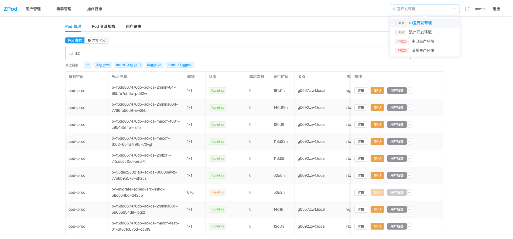
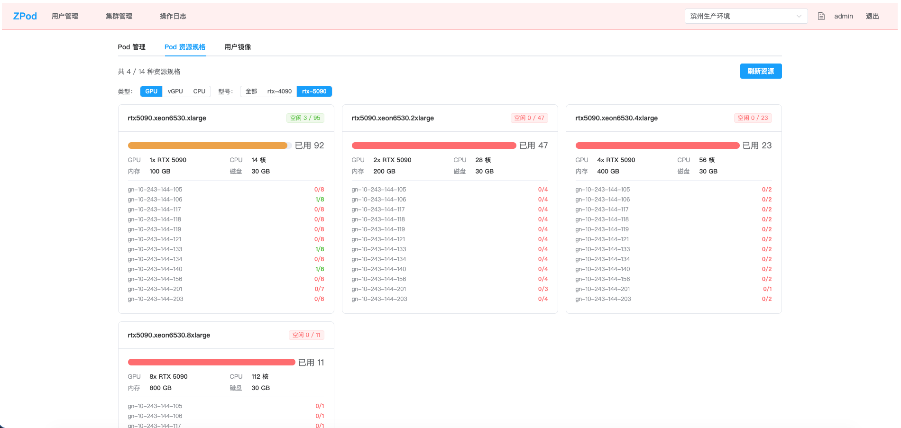
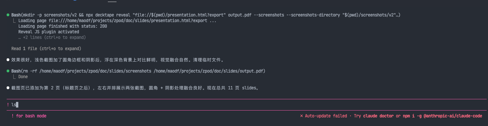

轻量级多集群 K8s Pod 管理控制台，全程 Claude Code 生成：前后端代码、Dockerfile、部署脚本、文档

Pod 搜索与管理

资源规格总览
以 ZPod 项目为例 — 从 PRD 到上线的 AI 全栈开发
Vue 3 + FastAPI + Docker + K8s
轻量级多集群 K8s Pod 管理控制台，全程 Claude Code 生成：前后端代码、Dockerfile、部署脚本、文档

Pod 搜索与管理

资源规格总览
PRD 驱动 → 分阶段实现 → 远程部署验证
第一步不是写代码，而是和 Claude Code 一起完善 PRD
用 sh 库调用 kubectl，原因是跨版本兼容
帮我写一个 k8s 管理系统
1
项目骨架与容器基础设施
2
数据库模型与初始化种子数据
3
核心 K8s 逻辑（kubectl 封装）
4
FastAPI 全部路由（认证 + CRUD）
5
前端框架搭建（Vue3 + Element Plus）
6
前端页面联调 + 全流程验证
Claude Code 直接操作远程环境，本地无需任何运行时
编码
rsync 同步
构建
验证
#!/bin/bash
rsync -avz --delete \
--exclude '.git' --exclude 'node_modules' \
./ maodf@nuc2:/home/maodf/sandbox/zpod/
ssh maodf@nuc2 "cd /home/maodf/sandbox/zpod && docker compose up -d --build" Claude Code 直接执行 sync_and_run.sh，看到构建输出和报错，形成快速迭代闭环
/btw · /rewind · CLAUDE.md · 对话管理
AI 正在帮你实现功能 A，你突然想到功能 B 的改进
传统做法
等 A 做完再说，或打断当前任务 → 上下文混乱
使用 /btw
随时插入想法，AI 记住并在合适时机处理
开发 ZPod 过程中，在实现后端接口时：
/btw 前端 Kill 按钮在 PROD
环境下应该用红色确认框AI 继续完成当前接口开发，到前端阶段时自动应用了这个想法
回溯到对话中的某个节点，撤销之后的所有文件更改
git checkout 更精确 — 它知道哪些文件改过让 AI 重构了一段代码，结果跑不通
/rewind 一键回到重构前
AI 修改了多个文件，方向不对
/rewind 全部还原，换个思路重来
在 Claude Code 提示符中输入 ! 前缀，直接执行 shell 命令
! ls ! git status ! docker ps

输入 ! 前缀即可执行 shell 命令
项目级别的提示词，每次对话自动加载
保持 AI 上下文聚焦高效
先出初版 → 部署验证 → 再提修改
比一次性描述所有需求效果更好
你提供要点，AI 产出结构化文档
PRD、设计文档、README 都适用
1
先文档后代码 — PRD 是给 AI 最好的提示词
2
分阶段交付 — 每个 Phase 部署验证，快速迭代
3
提供可测试环境 — 让 AI 能部署、能验证、能修复
4
善用工具 — /btw 记录灵感，/rewind 快速回退
5
人驱动方向，AI 驱动执行 — 你是架构师，AI 是全栈工程师
ZPod — 全程 Claude Code 开发